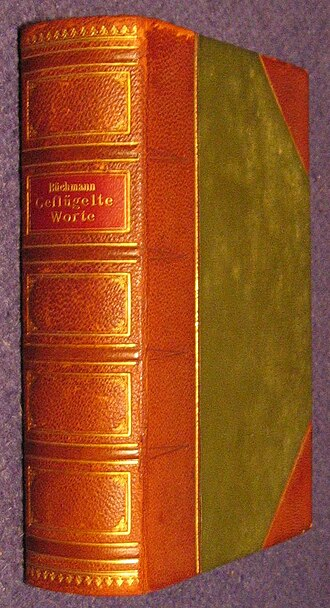

A világ legrégebbi ismert könyve az Ebers papirusz, amely az ókori Egyiptomból származik.
| Cím | Szerző | Megjelenés éve |
|---|---|---|
| A kis herceg | Antoine de Saint-Exupéry | 1943 |
| A gyűrűk ura | J. R. R. Tolkien | 1954 |
Ha érdekel a könyvek története, nézd meg ezt az oldalt: Wikipedia - Könyv
Vissza a kezdőlapraKészítette: Fekete Fanni Erika